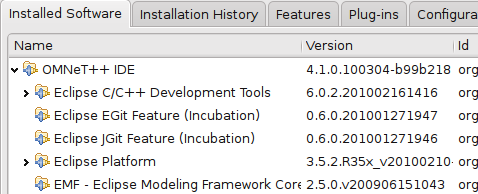
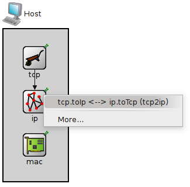
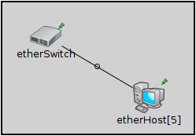
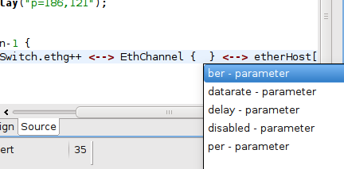
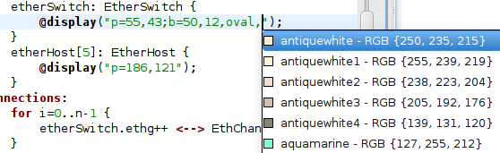
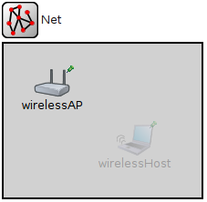

New Eclipse Platform
The IDE is now based on Eclipse 3.5.2 and CDT 6.0.2.
Manual Palette Filtering
Palette items in NED editor can be filtered with a substring search.

Adaptive Palette Ordering
Submodule types that are related to the currently used compound module and its submodules are displayed first in the NED editor palette. Submodules that are already used in the compound module are placed at the top. The @labels properties on the gates are also used to decide which other submodules can be connected to the current ones.

Connection Chooser Enhancements
When two modules are connected with a connection, the editor tries to guess which gates must be connected based on @labels properties.
Connection Rendering Enhancements
Looped and conditional connections are rendered differently by the IDE.
New Parameter Editor Dialog
A parameter editor dialog has been added for channel and module parameters. It can be accessed using the context menu of the submodule or connection.

Content Assist for Connections
Content assist is working now for connection parameters (delay, datarate etc.).
Content Assist for Icons
Content assist is available for icons by pressing Ctrl-Space in a display string.
Content Assist for Colors
Content assist is available for colors by pressing Ctrl-Space in a display string.
Content Assist for Statistics
Content assist is available for statistics by pressing Ctrl-Space in a @statistic property definition.

Support for @dynamic Property
Modules can be tagged with the @dynamic property. Dynamic modules are handled exactly the same way as normal modules (i.e. content assist, validation and parameter lookup is working correctly), except that the simulation kernel does not instantiate them automatically during network setup. Dynamic modules are displayed semi-transparently in the NED editor.
